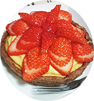
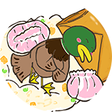

About
1996年生まれ。ポルトガル在住。
2022年より2年半勤めた会社を退職し、webデザイナーとして活動開始。
趣味
お菓子作り、イラスト、
小説を書く
履歴 :
2014年04月 : 大学入学
2018年03月 : 大学卒業
2018年04月 : 大学院入学
2020年03月 : 大学院卒業
2020年04月 : 開発職として企業に就職
2022年09月 : 退職してポルトガルへ
2022年12月 : デジタルハリウッドオンラインスクール入学
2023年07月 : デジタルハリウッドオンラインスクール卒業
- 
- 
Works
-

名刺/フライヤー
名刺、招待状やフライヤーなどの印刷物に対応可能です。
illustrator, Photoshop -

イラスト/ロゴ
イメージキャラクターやロゴなどの作成に対応可能です。
illustrator, Photoshop -

ホームページ
企業HPやお店、趣味用などのホームページ作成に対応可能です。
html, css
News
-
フリーランスデザイナーを始めました。
デジタルハリウッドオンライン、webデザインコースを卒業しました。フリーランスデザイナーとして駆け出します。お仕事の依頼はContactを参照ください。
-
webデザインの勉強を始めました
デジタルハリウッドオンライン、webデザインコースに入学しました。がんばります！
-
引っ越ししました
仮宿暮らしから２年間お世話になる家に引っ越しできました。これから部屋の環境を整えていきます。
-
会社を退職しました
2年半のお勤めが終わりました。大変でしたが、いざこれで終わりとなると寂しいものがあります。
-
大学院を卒業しました
修士号を取得しました。研究生活もこれでおしまいです。次の4月からは希望していた会社・職種（開発職）での勤務になります。